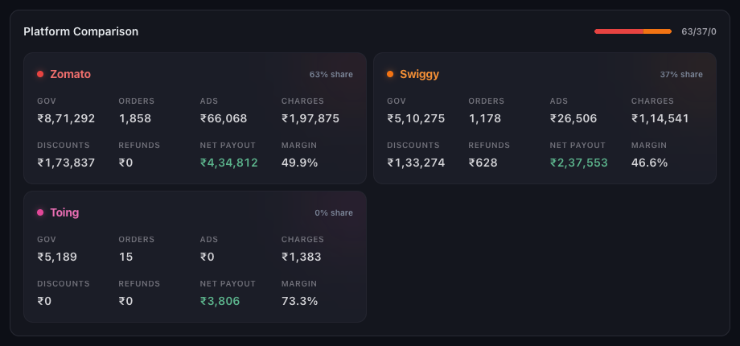
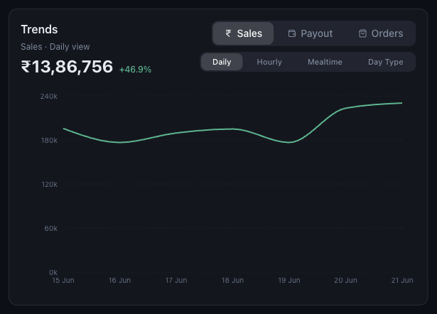
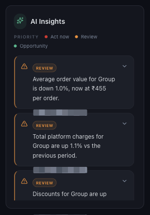

Each platform card repeats the headline metrics — gross order value, orders, ads, charges, discounts, refunds, net payout and margin — so you can see which platform moved the group figure. A share bar at the top shows the split at a glance.

| Sales / Payout / Orders | Which measure to plot. |
|---|---|
| Daily | Day by day across the period — best for spotting a single bad day. |
| Hourly | By hour of day — best for staffing and kitchen capacity. |
| Mealtime | Grouped into meal windows. |
| Day Type | Weekday against weekend. |
A card tells you that something moved; the trend tells you when. A week that is down because of one closed day reads very differently from one that is down every day.

| Act now | Something is costing money today. |
|---|---|
| Review | Worth a look, not urgent. |
| Opportunity | A positive movement worth building on. |
Insights are generated from the same filtered data as the cards, so changing the filters changes the insights. They point at where to look; the trend and comparison views tell you what actually happened.
Or open Help & Support in Mynt and raise a ticket.